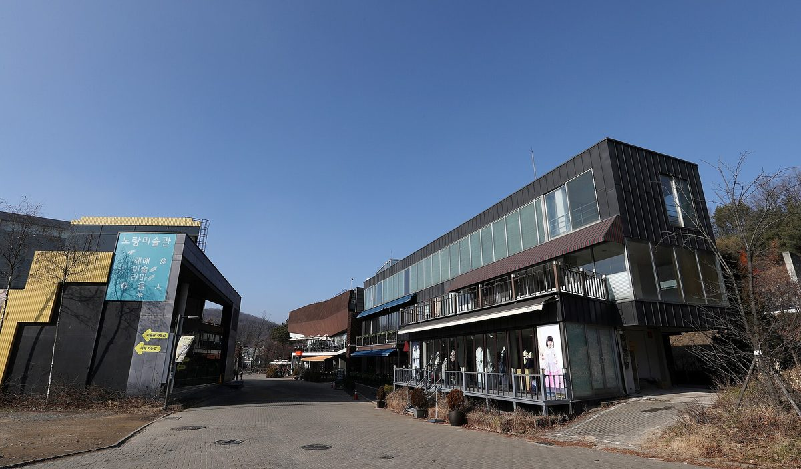

파주해시민발전협동조합, 공장 지붕에 81.92kW 5호기 준공하고 창립 5주년

시민 출자로 광탄면 K-두부연구소 지붕에 설치…신문협동조합 파주에서·평화로가게와 3자 업무협약
파주해시민발전협동조합이 시민 출자로 지은 다섯 번째 태양광발전소를 준공하고 창립 5주년을 맞았다. 조합은 이달 3일 오후 파주 헤이리 6번 게이트 하늘공원의 '햇빛장'에서 5호기 준공식과 창립 5주년 기념행사를 열었다. 5호기는 광탄면 K-두부연구소 공장 지붕에 들어선 설비용량 81.92kW의 태양광발전소로, 햇빛장에서 만나 서로의 활동을 알게 된 인연이 발전소 부지로 이어졌다. 행사에서는 신문협동조합 '파주에서'와 파주해시민발전협동조합, 햇빛장을 운영하는 평화로가게가 3자 업무협약을 맺고 서로의 경험과 역량을 나누며 함께할 일을 찾기로 했다. 조합은 앞으로도 시민과 함께 지역 곳곳에 햇빛발전소를 늘리고 지역 단체와의 협력을 이어갈 계획이다.
시민에너지 관점
81.92kW는 대형 발전단지에 비하면 작지만, 이웃으로 만난 사람이 공장 지붕을 내주고 시민이 돈을 모아 발전소를 세우는 과정 자체가 지역 에너지의 바탕이다. 작은 협동조합 발전소로는 전환 속도를 낼 수 없다는 반론도 있지만, 지붕 하나하나를 시민 소유로 잇는 방식은 갈등이 적고 수익이 지역에 남는다. 영국 웨일스의 시민에너지 단체 커뮤니티 에너지 펨브룩셔는 마을 풍력터빈에서 번 1만 파운드를 국립공원청의 지속가능발전기금에 보태 주민주도 탄소감축 사업으로 다시 돌렸다. 지자체는 공장과 공공건물 지붕을 시민발전 협동조합과 이어 주는 창구부터 만들어 이런 발전소가 더 빨리 늘게 해야 한다.
출처: 파주에서신문 2026-10-20 파주에서신문 원문 보기
パジュヘ市民発電協同組合、工場屋根に81.92kWの5号機を竣工し創立5周年
市民の出資で広灘面のK豆腐研究所の屋根に設置…新聞協同組合「パジュエソ」・平和路ショップと3者業務協約
京畿道坡州（パジュ）市のパジュヘ市民発電協同組合が、市民の出資で建てた5基目の太陽光発電所を竣工し、創立5周年を迎えた。組合は3日午後、坡州ヘイリ芸術村6番ゲートの空中公園にある「ヘッピッチャン」で、5号機の竣工式と創立5周年の記念行事を開いた。5号機は広灘（クァンタン）面のK豆腐研究所の工場屋根に設置された設備容量81.92kWの太陽光発電所で、ヘッピッチャンで出会い互いの活動を知った縁が発電所の用地につながった。行事では、新聞協同組合「パジュエソ」、パジュヘ市民発電協同組合、ヘッピッチャンを運営する平和路ショップが3者の業務協約を結び、互いの経験と力を分かち合い、共にできることを探すことにした。組合は今後も市民とともに地域の各地に太陽光発電所を増やし、地域団体との協力を続ける計画だ。
市民エネルギーの視点
81.92kWは大規模な発電団地に比べれば小さいが、隣人として出会った人が工場の屋根を差し出し、市民がお金を集めて発電所を建てる過程そのものが地域エネルギーの土台になる。小さな協同組合の発電所では転換のスピードを上げられないという反論もあるが、屋根一つひとつを市民の所有でつないでいく方式は対立が少なく、収益が地域に残る。英国ウェールズの市民エネルギー団体コミュニティ・エナジー・ペンブルックシャーは、村の風車で得た1万ポンドを国立公園庁の持続可能な開発基金に加え、住民主導の炭素削減事業に再び回した。自治体は工場や公共建物の屋根を市民発電協同組合とつなぐ窓口づくりから始め、こうした発電所がより早く増えるようにすべきだ。
出典: Atpaju (Paju-eseo) 2026-10-20 Atpaju 原文を読む
坡州Hae市民发电合作社在工厂屋顶建成81.92kW第五号电站，迎来成立五周年
以市民出资在广滩面K豆腐研究所屋顶安装；与报业合作社Paju-eseo、和平路商店签署三方业务协议
京畿道坡州市的坡州Hae市民发电合作社以市民出资建成第五座太阳能电站，并迎来成立五周年。合作社于3日下午在坡州Heyri艺术村6号门空中公园的"Haetbitjang"举行了五号电站竣工仪式和成立五周年纪念活动。五号电站是安装在广滩面K豆腐研究所工厂屋顶上的装机容量81.92kW的太阳能电站，在Haetbitjang相识、彼此了解对方活动的缘分最终促成了电站选址。活动中，报业合作社"Paju-eseo"、坡州Hae市民发电合作社和运营Haetbitjang的和平路商店签署了三方业务协议，约定分享彼此的经验和能力，共同寻找可以一起做的事情。合作社计划今后继续与市民一起在当地各处增建阳光电站，并延续与地方团体的合作。
市民能源视角
81.92kW与大型发电园区相比规模很小，但以邻居身份相识的人拿出工厂屋顶、市民集资建电站，这一过程本身就是地方能源的基础。有人认为小型合作社电站无法加快能源转型，但把一个个屋顶连接成市民所有的方式冲突少，收益也留在当地。英国威尔士的市民能源团体Community Energy Pembrokeshire把村里风机赚到的1万英镑投入国家公园管理局的可持续发展基金，再次用于居民主导的减碳项目。地方政府应先建立把工厂和公共建筑屋顶与市民发电合作社对接起来的窗口，让这样的电站更快增加。
来源: Atpaju (Paju-eseo) 2026-10-20 Atpaju 查看原文
Paju citizen power cooperative completes 81.92kW fifth plant on factory roof, marks fifth anniversary
Funded by citizens and installed on the K-Tofu Institute roof in Gwangtan; three-way agreement with newspaper cooperative Paju-eseo and Pyeonghwaro shop
The Pajuhae Citizen Power Cooperative in Paju, Gyeonggi Province, has completed its fifth solar plant built with citizen investment and marked its fifth anniversary. The cooperative held the completion ceremony and anniversary event on the afternoon of the 3rd at Haetbitjang in the sky park by Gate 6 of Heyri Art Village. The fifth plant is an 81.92kW array on the factory roof of the K-Tofu Institute in Gwangtan-myeon, and the site came about through acquaintances first made at Haetbitjang. At the event, the newspaper cooperative Paju-eseo, the Pajuhae Citizen Power Cooperative and Pyeonghwaro shop, which runs Haetbitjang, signed a three-way agreement to share experience and capacity and look for work they can do together. The cooperative plans to keep adding solar plants across the area with citizens and to continue working with local groups.
Citizen Energy View
At 81.92kW the plant is small next to large solar farms, but the process of a neighbour offering a factory roof and citizens pooling money to build on it is itself the foundation of local energy. Some argue small cooperative plants cannot speed up the transition, yet linking roof after roof under citizen ownership produces little conflict and keeps the returns local. In Wales, the citizen energy group Community Energy Pembrokeshire added 10,000 pounds earned from a village wind turbine to the national park authority's Sustainable Development Fund, recycling it into community-led carbon reduction projects. Local governments should start by setting up a channel that connects factory and public building roofs with citizen power cooperatives so that plants like this multiply faster.
Source: Atpaju (Paju-eseo) 2026-10-20 Atpaju Read the original